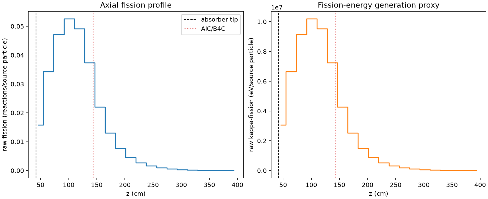
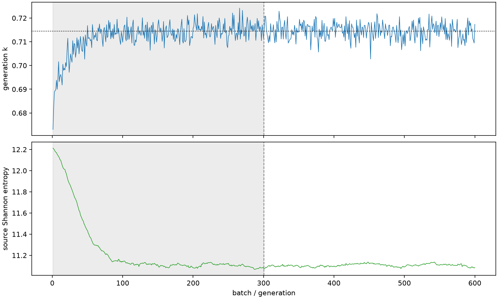

| field | value |
|---|---|
| experiment | V2-STAGE_256_OGRENCI_04-0004 |
| k | 0.7145121745814389 |
| MC standard error | 0.00015741292718325888 |
| seconds | 5796.0963226290005 |
| acceptance | not_assessed |
| convergence | review_required |
Completed is output integrity only; physical and statistical review required. Zero tallies do not prove zero production or zero uncertainty.
| diagnostic | value |
|---|---|
| geometric fuel voxels | 5280 |
| zero fission tally voxels | 0 |
| low signal fuel voxels | 518 |
| low signal fission share | 0.00016710906270701886 |
| low signal kappa share | 0.00016713173209632746 |
| important fission share | 0.9500211456177847 |
| previous filter included | 4762 |
| duration estimate s | 1562.5173488400023 |
| actual minus estimate s | 4233.578973788998 |
| fission relative MC error | statistics |
|---|---|
| all_geometric_fuel | {"voxels": 5280, "positive_mean_voxels": 5280, "zero_mean_voxels": 0, "undefined_relative_error_voxels": 0, "median": 0.023487633439161437, "p95": 0.2806338389381488, "maximum": 0.5802191025737924} |
| low_signal | {"voxels": 518, "positive_mean_voxels": 518, "zero_mean_voxels": 0, "undefined_relative_error_voxels": 0, "median": 0.2836576624134085, "p95": 0.4348044881895855, "maximum": 0.5802191025737924} |
| important_95pct | {"voxels": 2241, "positive_mean_voxels": 2241, "zero_mean_voxels": 0, "undefined_relative_error_voxels": 0, "median": 0.007583474724559099, "p95": 0.014769954988856552, "maximum": 0.01809127073212246} |
| outside_previous_filter | {"voxels": 518, "positive_mean_voxels": 518, "zero_mean_voxels": 0, "undefined_relative_error_voxels": 0, "median": 0.2836576624134085, "p95": 0.4348044881895855, "maximum": 0.5802191025737924} |
| kappa_fission relative MC error | statistics |
|---|---|
| all_geometric_fuel | {"voxels": 5280, "positive_mean_voxels": 5280, "zero_mean_voxels": 0, "undefined_relative_error_voxels": 0, "median": 0.023444008214433813, "p95": 0.2801024038756225, "maximum": 0.5790003237378386} |
| low_signal | {"voxels": 518, "positive_mean_voxels": 518, "zero_mean_voxels": 0, "undefined_relative_error_voxels": 0, "median": 0.2832521971458199, "p95": 0.4340322181025659, "maximum": 0.5790003237378386} |
| important_95pct | {"voxels": 2241, "positive_mean_voxels": 2241, "zero_mean_voxels": 0, "undefined_relative_error_voxels": 0, "median": 0.007568885445853372, "p95": 0.01474273373234779, "maximum": 0.018061896563996257} |
| outside_previous_filter | {"voxels": 518, "positive_mean_voxels": 518, "zero_mean_voxels": 0, "undefined_relative_error_voxels": 0, "median": 0.2832521971458199, "p95": 0.4340322181025659, "maximum": 0.5790003237378386} |
| axial bin | fission share | kappa-fission share |
|---|---|---|
| 1 | 0.05437521727823917 | 0.054375062362167534 |
| 2 | 0.11822196146667933 | 0.11821908423317679 |
| 3 | 0.16249360162669102 | 0.1624892584785882 |
| 4 | 0.18105890713258344 | 0.18105422270521287 |
| 5 | 0.1693598855384964 | 0.16935562369957274 |
| 6 | 0.1288814444949482 | 0.12888030409984466 |
| 7 | 0.07603293922931162 | 0.07603962974420346 |
| 8 | 0.044793775655462734 | 0.04479821368874907 |
| 9 | 0.02648433766448387 | 0.02648692890524935 |
| 10 | 0.015647779039060842 | 0.015649306282015923 |
| 11 | 0.009340306375624049 | 0.00934120119928525 |
| 12 | 0.005471380176086547 | 0.005471957321845473 |
| 13 | 0.003283224156241643 | 0.0032834931232721886 |
| 14 | 0.001981884942157372 | 0.0019820770125561146 |
| 15 | 0.0011547499161060413 | 0.0011548667373486741 |
| 16 | 0.0006656077484875302 | 0.000665670679790643 |
| 17 | 0.00037758279969408553 | 0.0003776299374337389 |
| 18 | 0.00021387626710428733 | 0.00021390289653666123 |
| 19 | 0.00011680972372782566 | 0.00011682786246195244 |
| 20 | 4.472876881410004e-05 | 4.473903068859266e-05 |
Histories include the inactive-to-active transition at batch 300. kappa-fission approximates fission energy production, not total heat deposition.

